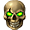

Фракции
Мир Heroes of W&M населен множеством
народов и существ. Герои каждой фракции обладают своими уникальными
свойствами и подконтрольными существами. Поэтому очень важно в начале
игры определить наиболее подходящий для игрока народ. Отметим, что в
процессе игры фракция персонажа всегда может быть изменена на странице
вашего замка.
Фракции обладают
подклассами - с альтернативными навыками, набором армии существ и
дополнительными бонусами.
Рыцари
Рыцарь света
(альтернативный
класс, доступен с 5 БУ)
Очень противоречивая и одна из самых короткоживущих фракций, населяющих
земли Империи. Обладая относительно слабой магией, рыцари полагаются в
бою на физическую силу и тактическое планирование. Они умело используют
все виды холодного оружия, а характеристики их существ относительно
сбалансированы и полезны как в нападении, так и в защите. Эта
универсальность зачастую помогает им выходить победителями из
большинства схваток, однако требует стратегического мышления. Если Вы
по природе тактик и грубой силе предпочитаете тонкий расчет,
становитесь рыцарем.
Именно люди привнесли в мир Heroes of
W&M понятие предательства, жадности и мелочности. Однако при
всей нелюбви к ним других фракций, факт остается фактом - они сила, с
которой обязаны считаться.
Некроманты 
Некромант - повелитель
смерти  (альтернативный
класс, доступен с 5 БУ) (альтернативный
класс, доступен с 5 БУ)
Древняя и могущественная фракция, поскольку потусторонние силы нагоняют
страх даже на самых опытных воинов. Их сильная сторона – это контактный
бой с акцентом на нападение. Повелители смерти и мастера черной магии,
некроманты обладают такими уникальными способностями, как воскрешение
мертвых и вампиризм. На мертвых существ не распространяются законы
морали: их нельзя воодушевить перспективой победы, но они и не боятся
умереть. Для начинающих и тех, кто не может определиться с выбором,
некроманты являются идеальной фракцией.
Количество и влияние служителей тьмы
постоянно растет. Обращая в прах своих врагов, некроманты неумолимо
следуют своей главной цели – стать самой могущественной силой этого
мира.
Маги
Маг - разрушитель
(альтернативный
класс, доступен с 5 БУ)
Маги - это гордые охотники за знаниями, стремящиеся подчинить себе
порядок мироздания. Их общество посвятило себя мудрости и знаниям -
маги проводят свою жизнь, изучая и описывая оккультные науки.
Волшебники правят прислуживающими им существами, которых они либо
призвали, либо оживили с помощью магии. Их воины особенно сильны в
защите, а магические заклинания у этой фракции являются одними из самых
мощных. Однако боевая мощь магов напрямую зависит от количества маны,
отсутствие которой порой сильно ограничивает их действия. Фракция магов
отлично подходит для терпеливых игроков и любителей игры от обороны,
предпочитающих уничтожать войска неприятеля на подходе.
На землях Империи, маги считают себя
доминирующим народом. Они не верят в существование высших существ и
считают, что если потратить достаточно сил на исследования и
эксперименты, достигнуть равных богам возможностей могут и они сами.
Эльфы
Эльф - заклинатель
(альтернативный
класс, доступен с 5 БУ)
Представители этого народа, часто называемые перворожденные,
по праву считаются древнейшими и наимудрейшими жителями мира Heroes of
W&M. Большую часть своей жизни они проводят в лесах, где нет
надобности в силе, главное – хороший лук и меткий глаз. Природа
наградила эльфов одним из самых больших значений инициативы в игре, а
навык заклятый враг, увеличивающий шанс нанесения
критического урона, делает их очень опасными противниками на дальних
расстояниях. Фракцию эльфов чаще всего выбирают спокойные и
уравновешенные игроки, любящие созидательный и оборонительный стиль
игры.
Эльфы - прекрасные и терпеливые души,
которые живут в тесной гармонии с Землей. Они всегда придерживаются
своих древнейших традиций и зачастую другие народы Heroes of
W&M, считают их нелюдимыми, чрезмерно гордыми и замкнутыми на
своих проблемах.
Варвары 
Варвар крови
 (альтернативный
класс, доступен с 5 БУ) (альтернативный
класс, доступен с 5 БУ)
Варвар - шаман
 (альтернативный
класс, доступен с 5 БУ) (альтернативный
класс, доступен с 5 БУ)
Варвары сохранили устои своей культуры с древних времен до наших дней
практически без изменений. В основе их этноса лежат мощь и
стремительность. Залогом успеха всегда было отменное здоровье и
постоянное совершенствование боевых умений. Обладая отличными
атакующими характеристиками, они, тем ни менее, подвержены беспорядку и
потому часто проигрывают при игре в обороне. Эта фракция больше всего
подойдет непримиримым и агрессивно настроенным игрокам.
На данный момент варвары вынуждены мириться
с соседством других народов, однако в традициях этих воинов заложено
бесспорное превосходство и потому они всегда будут бороться за
доминирование.
Темные Эльфы
Темный эльф -
укротитель  (альтернативный
класс, доступен с 5 БУ) (альтернативный
класс, доступен с 5 БУ)
Их происхождение и история во многом остаются загадкой; точно известно
лишь то, что отделение ветви ТЭ от основного ствола эльфийской расы
произошло очень давно. Приняв сторону зла, темные эльфы обосновались в
подземелье — громадной системе пещер, гротов, переходов и туннелей как
естественного, так и искусственного происхождения, растянувшихся под
всей Империей. Излюбленная тактика их бойцов - молниеносная атака
небольшими, но сильными отрядами при поддержке искуснейших магов.
Модель общества темных эльфов можно описать как "война всех против
всех", поэтому игрокам этой фракции свойственны самоуверенность и
любовь к интригам.
Надменные, от природы коварные и
беспринципные, темные эльфы постепенно захватывают подземный мир.
Однако, обретая всё большую силу, в поисках власти их взоры всё чаще и
чаще обращаются на поверхность...
Демоны 
Демон тьмы
(альтернативный
класс, доступен с 5 БУ)
Чудовища из преисподней, всю свою жизнь сражаются ради хаоса, крови и
страданий. Фракция демонов враждебна ко всему сущему - их воины
известны безумной жестокостью на поле боя, а уникальные магические
способности позволяют призывать подкрепления и обрушивать на головы
врагов ярость огненной стихии. В поединках игра за демонов предполагает
атакующие действия при поддержке магии.
Демоны готовы сжечь мир дотла и повергнуть
истерзанный мир в вечные тьму и разрушение. Этой фракции однажды уже
удавалось захватывать огромные территории Империи, но позже силы ада
были откинуты назад. Удастся ли им повторить, а может превзойти этот
успех - зависит от вас!
Гномы
Гном огня  (альтернативный класс, доступен с 5 БУ) (альтернативный класс, доступен с 5 БУ)
Воинственный народ, пришедший когда-то с востока и попытавшийся
захватить Империю. Потерпели сокрушительное поражение и были вынуждены
долгое время скрываться в лесах. Через некоторое время указом
Императрицы гномы были признаны полноправными подданными, а все распри
и ссоры с ними были забыты.
Благодаря своей выносливости, которой так славятся гномы, они способны
выдержать любую стремительную атаку. Гномы владеют магией, хотя часто
предпочитают магическому бою бой рукопашный. Единственный вид магии в
котором гномы преуспели намного больше остальных - рунная магия. Владея
секретом рун, гномы могут легко переломить ход боя в свою пользу.
Гномы - суровые, бородатые карлики. Они не очень общительны и не терпят
спешки. Отличные воины, о которых нам известно ещё далеко не всё. Гномы
ревностно охраняют свои секреты и не очень жалуют чужаков. Они
смирились со своим поражением и стали частью Империи. Но где-то в
глубине души каждый гном всё ещё слышит шум битвы... Битвы за
господство на этих землях!
Степные Варвары 
Истинные дети битвы, духом которой насквозь пропитана их бурлящая
кровь. Им чужды такие понятия, как вежливость и этикет. Главный их
аргумент – это грубая сила, помноженная на боевую ярость, что просто
нельзя не принять во внимание как неоспоримый довод. Основной же
принцип в бою – без малейшего промедления сокрушать всё на своём пути,
жертвуя слабыми во имя доминирования сильнейших.
И хотя степные варвары бежали от тирании безумного степного хана, прося
покровительства и помощи у Империи, их дух вовсе не сломлен, а жажда
битвы как никогда сильна. Они намерены яростной звериной хваткой
вырвать себе достойное место на этих землях из рук их высокомерных
обитателей. |
|
|